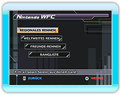

17 |
Nintendo WFC |
 |
|
Wähle „Nintendo WFC“ im Hauptmenü. Wenn die Verbindung hergestellt wurde, wird der Nintendo WFC-Modus auswahl bildschirm angezeigt. Wähle den gewünschten Nintendo WFC-Modus aus und drücke
● REGIONALES RENNEN
● WELTWEITES RENNEN
● FREUNDE-RENNEN
● RANGLISTE
Du kannst zwischen zwei Modi wählen. Wähle den Modus, an dem du teilnehmen möchtest, und drücke dann
● WETTKAMPF
● STOISCH
Wähle einen Charakter und eine Ausrüstung aus. Wähle anschließend eine Piste für das Rennen. Aus den verschiedenen, von den Mitspielern gewünschten Pisten wird eine zufällig ausgewählt. Ist ein Rennen vorbei, verbessert oder verschlechtert sich deine Bewertung – je nachdem, gut du warst.
● FREUNDE-RAUM
● Einem Freund anschließen
Bei Rennen unter Freunden werden eure Rennergebnisse aktualisiert.
● Freund registrieren
Dein Ranglistenplatz hängt von gesendeten und empfangenen Bewertungspunkten im WETTKAMPF- und STOISCH-Modus oder den Zeiten im ZEITRENNEN ab.
Wenn du den gewünschten Ranglistentyp ausgewählt hast, werden die ersten 10 Plätze jeder Kategorie angezeigt. Du kannst auch nachsehen, wo deine Freunde und du stehen. Die Ranglistenplätze werden automatisch aktualisiert, wenn du einen Ranglistentyp auswählst.
*
|
 |
 |
 |